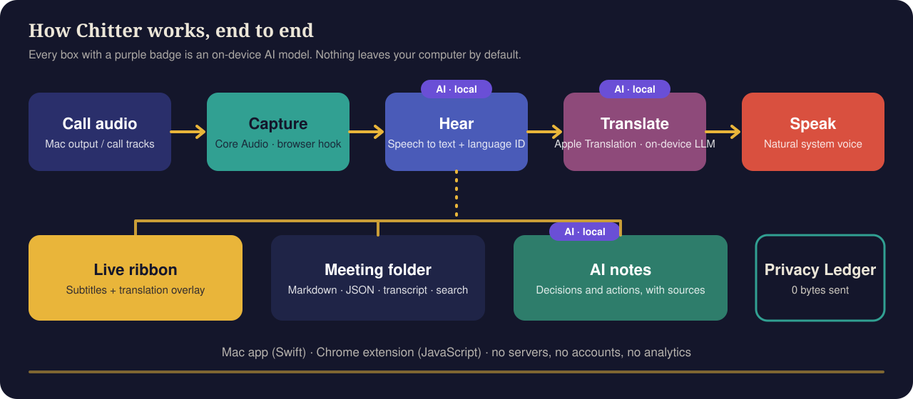

Free · open source · no bot
Catch every word. Keep what matters.
Live subtitles for any call, foreign speech spoken to you in your language, your voice interpreted into the meeting, and notes where every decision points to the exact line it came from.
Mac app (macOS 14.4+) · Chrome extension (Windows, Linux, ChromeOS, Mac)
Watch
See how it works
Animated illustrations built from the app's real output, not screen recordings. The subtitle translation shown is illustrative.
1 · Live Ribbon
Subtitles for anything your Mac plays
Zoom, Meet, a YouTube lecture, a podcast. A slim ribbon appears when someone speaks, fades after three quiet seconds, and goes see-through when you hover. A thread under each line grows as the sentence completes.
Illustration. Translation needs the Apple language pack, Ollama, or an API key you add.
Starts by itself
Pops up when a call begins
Call detection
Chitter notices when Zoom, Teams, FaceTime, Slack, Discord, or a Meet or Teams tab in any browser opens your microphone, and wakes up. It ends and writes the notes when the call ends. A brief mute doesn't hang up the meeting.
Voice-over
When someone speaks another language, Chitter translates each finished sentence and says it in your language, using the best voice installed on your computer. It speeds up slightly, then skips old lines, instead of falling behind. Speak a different language mid-call and it follows.
Chrome extension
The same subtitles, voice-over and notes for Meet, Teams, Zoom web and others, on Windows, Linux, ChromeOS and Mac. It uses Chrome's built-in on-device AI and sends nothing anywhere.
2 · Interpret
Hold right ⌥ and speak your language
Your voice, their language
Chitter recognises what you say, translates it, and speaks it into the call through the free BlackHole 2ch virtual microphone. Your real mic comes back the moment it finishes, and when you quit.
Free voices
Uses the built-in macOS voices. No voice cloning in v0.1, and no account. In our test a 6-second sentence took 1.7 s to recognise and voice, before translation time.
3 · Pull the Thread
Every conclusion points to its source
Hover or focus a note. A thread is drawn to the line it came from.
L1Let's start with the launch date.
L2I think we should move the release to the first of March because testing is not finished.
L3I will ask the design team to finish the onboarding screens by next Wednesday.
L4Priya needs to update the privacy policy before launch.
- Decision: release moves to March 1 (L2)
- Action: design team finishes onboarding screens, by next Wednesday (L3)
- Action: Priya updates the privacy policy (L4)
Sample meeting, notes written by Apple's on-device model on a Mac.
Tech & AI
What it's made of, and where AI is used
| Part | Technology | Used for |
|---|---|---|
| Mac app | Swift 6, SwiftUI, AppKit | Menu bar, ribbon, notes window, settings |
| Hearing calls | Core Audio, AVFoundation | Listens to the Mac's sound; detects which app is in a call |
| Extension | JavaScript, Manifest V3, WebRTC | Takes each participant's audio in the browser |
| Storage | Plain files, SQLite search | Meetings you own; misspelling-tolerant search |
| Website | HTML, CSS, JavaScript | This page, about 20 KB, no framework |
Where AI is used
| Job | Model | Runs |
|---|---|---|
| Speech to text | Apple SpeechAnalyzer · Whisper · Chrome on-device speech | On your device |
| Language detection | Whisper · Chrome LanguageDetector | On your device |
| Translation | Apple Translation · Apple on-device model · Chrome Translator | On your device |
| Notes | Apple on-device model · Chrome Gemini Nano · optional Ollama or your own key | On your device by default |
| Voice | System speech synthesis | On your device |
Notes must cite transcript lines, and Chitter drops any item that cites a line that doesn't exist, so the model can't invent its sources.

4 · Privacy Ledger
See every byte that leaves
| Time | Host | Why | Meeting data |
|---|---|---|---|
| — | — | No requests during this meeting | 0 bytes |
Meeting data sent: 0 bytes. If you add a cloud key, each request shows up here with its host and size. No analytics. No accounts. No Chitter servers.
5 · Cost
The receipt
6 · Compatibility
What runs where
| macOS | Speech | Notes | Status |
|---|---|---|---|
| Mac app, macOS 26+ | Apple on-device | Apple on-device model | Built and run on macOS 27 |
| 14.4 – 25 | WhisperKit | Ollama or extractive | Designed for; not yet tested on real hardware |
| Chrome 139+ (Windows, Linux, ChromeOS, Mac) | Chrome on-device | Chrome Gemini Nano | Logic and a WebRTC test pass; real-call testing in progress |
| Intel Macs | Not tested | ||
7 · Install
Install
Chrome extension
Open chrome://extensions, switch on Developer mode, choose Load unpacked, and select the extension folder from the repository. Then reload your call tab.
Mac app: Homebrew
brew install --cask Ayush277/chitter/chitterMac app: download
Get Chitter-0.1.0.dmg from the Releases page, drag it to Applications, then verify it:
shasum -a 256 ~/Downloads/Chitter-0.1.0.dmgChitter isn't notarized yet (no paid Apple developer account). On first launch, right-click the app and choose Open, or run:
xattr -dr com.apple.quarantine /Applications/Chitter.app8 · FAQ
Questions
Does a bot join my meeting?
No. Chitter listens to your Mac's audio output directly. Tell people you're transcribing; laws differ and many places require everyone's consent.
What leaves my Mac?
By default, nothing about your meetings. If you add a cloud API key, transcript text (never audio) goes to that provider, and the Privacy Ledger lists each request.
Is it really free?
Yes. Speech, translation and notes use on-device tools. Optional cloud providers are bring-your-own-key; free tiers may rate-limit and Chitter then falls back to the next engine.
How is it different from other meeting-AI tools?
No bot joins, nothing leaves your device by default, notes cite the transcript line they came from, foreign speech is spoken aloud in your language, and meetings are plain files you can open in Obsidian. A Privacy Ledger lists every network request.
What doesn't it do yet?
No voice cloning, no speaker names, no cloud sync, and no native Windows app (the Chrome extension covers browser calls on Windows). Real-call testing of the capture and the extension is still in progress. Everything unverified is listed in the repository's progress log.